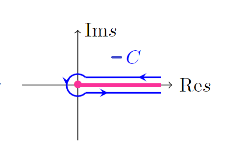

\[
\def\Gammaf{\varGamma}
\def\i{i}
\def\e{e}
\]
[2] 合流型超幾何関数
合流型超幾何微分方程式
\begin{align}
z\dv[2]{F}{z}+(b-z)\dv{F}{z}-aF=0\quad (a,b,z\in\mathbb{C},\ b\neq 0,-1,-2,\ldots)\label{eq:csde}
\end{align}
は、$F=F(a,b,z)$ および $F=z^{1-b}F(a-b+1,2-b,z)$ を解として独立に持つ。ここで $F(a,b,z)$ は合流型超幾何関数（confluent hypergeometric function）
\begin{align}
F(a,b,z)\equiv \sum_{n=0}^\infty \dfrac{1}{\Gammaf(1+n)}\dfrac{\Gammaf(a+n)\Gammaf(b)}{\Gammaf(a)\Gammaf(b+n)}z^n,\quad \Gammaf(n+1)=n!\label{eq:f-series}
\end{align}
である。この表示は $z\to\infty$ での振る舞いを考察するには適していない。以下の問で $z\to\infty$ での漸近展開について考察する。
積分の表面項が消えるという条件を
\begin{align}
\eval{e^{zt}\chi(a,b,t)}_{t\in\partial C}=0\label{eq:ccond}
\end{align}
が成り立つということに読み替える（$\partial C$ は経路 $C$ の端点）。こうしても以下の設問では問題はない。
\begin{align}
\dv{\tilde{F}}{z}=\int_C\dd{t}te^{zt}\chi(a,b,t)
\end{align}
というように $\tilde{F}$ を $z$ で微分するごとに $t$ が前に出てくる。このことを用いて $F=\tilde{F}$ を\eqref{eq:csde}に代入し、部分積分で $e^{zt}$ を積分すると
\begin{align}
(\text{第$\,1\,$項})&=z\dv[2]{\tilde{F}}{z}=\int_C\dd{t}zt^2e^{zt}\chi(a,b,t)\\
&=\eval{t^2\underbrace{e^{zt}\chi(a,b,t)}_{=0}}_{\partial C}-\int_C\dd{t}(2t\chi+t^2\dot{\chi})e^{zt}\\
(\text{第$\,2\,$項})&=(b-z)\dv{\tilde{F}}{z}=\int_C\dd{t}(b-z)te^{zt}\chi(a,b,t)\\
&=\int_C\dd{t}(bt\chi+\chi+t\dot{\chi})e^{zt}\\
(\text{第$\,3\,$項})&=-a\tilde{F}=\int_C\dd{t}(-a\chi)e^{zt}\\
\therefore &\int_C\dd{t}e^{-zt}[(b-2)t\chi+(1-a)\chi+(t-t^2)\dot{\chi}]=0\label{eq:inteq}
\end{align}
となる。$z$ に依らず\eqref{eq:inteq}が成り立ってほしいので
\begin{align}
(b-2)t\chi+(1-a)\chi+(t-t^2)\dot{\chi}=0\label{eq:chieq}
\end{align}
が $\chi(a,b,t)$ の満たすべき微分方程式として得られる。ここで、\eqref{eq:chieq} の左辺に
\begin{align}
\chi(a,b,t)&=t^{a-1}(t-1)^{b-a-1}
\end{align}
を代入して計算してみると、
\begin{align}
&(b-2)t^a(t-1)^{b-a-1}+(1-a)t^{a-1}(t-1)^{b-a-1}\\
&\quad+\underbrace{(t-t^2)\qty\bigg[(a-1)t^{a-2}(t-1)^{b-a-1}+(b-a-1)t^{a-1}(t-1)^{b-a-2}]}_{
\ds=-(a-1)t^{a-1}(t-1)^{b-a}-(b-a-1)t^{a}(t-1)^{b-a-1}}\\
&=(a-1)t^a(t-1)^{b-a-1}+(1-a)(1+t-1)t^{a-1}(t-1)^{b-a-1}\\
&=0
\end{align}
と、解になっていることが分かる。微分方程式の解の一意性より\eqref{eq:solverchi}が解である。まとめると
\begin{align}
\tilde{F}(a,b,z)&=A\int_C\dd{t} e^{zt}t^{a-1}(t-1)^{b-a-1}\quad(a,b,z\in\mathbb{C},\ b\neq 0,-1,-2,\ldots)\\
&\text{ただし積分経路 $C$ は積分が収束するように選ぶ}\notag
\end{align}
となる。また、\eqref{eq:ccond}は
\begin{align}
\partial C\subset\qty{0,1}\cup \qty{-\infty+\i y\mid y\in\mathbb{R}}
\end{align}
という条件に置き換わる（$C$ が閉曲線なら部分積分の表面項は自動的に消えるのでこの条件は必要ない？）。
\begin{align}
\dv[n]{z}(s-z)^{-a}&=(-1)^n(-a)(-a-1)\cdots(-a-n+1)(s-z)^{-a-n}\\
&=\underbrace{a(a+1)\cdots(a+n-1)}_{\ds=\Gammaf(a+n)/\Gammaf(a)}(s-z)^{-a-n}\\
\end{align}
より $z=0$ まわりで
\begin{align}
(s-z)^{-a}&=\sum_{n=0}^\infty \dfrac{1}{n!}\dfrac{\Gammaf(a+n)}{\Gammaf(a)}s^{-a-n}z^n
\end{align}
と展開できる。これを利用して\eqref{eq:f-int}の右辺を計算すると
\begin{align}
\dfrac{\Gammaf(b)}{2\pi\i}\int_C\dd{s}e^ss^{a-b}(s-z)^{-a}&=\dfrac{\Gammaf(b)}{2\pi\i}\sum_{n=0}^\infty \dfrac{1}{n!}\dfrac{\Gammaf(a+n)}{\Gamma(a)}z^n
\underbrace{\int_C\dd{s}\e^ss^{-b-n}}_{\ds=\dfrac{2\pi\i}{\Gammaf(b+n)}\eqref{eq:hankel}}\\
&=\sum_{n=0}^\infty \dfrac{1}{\Gammaf(n+1)}\dfrac{\Gammaf(a+n)\Gammaf(b)}{\Gammaf(a)\Gammaf(b+n)}z^n
\end{align}
となり、$F(a,b,z)$ の級数展開\eqref{eq:f-series}に一致するので\eqref{eq:f-int}は正しいことが分かる。
\eqref{eq:f-another}の右辺に\eqref{eq:g}を代入すると
\begin{align}
(\text{右辺第$\,1\,$項})&=\dfrac{\Gammaf(b)}{\Gammaf(b-a)}(-z)^a\dfrac{\Gammaf(b-a)}{2\pi\i}\int_{C_1}\dd{s}\qty\bigg(1-\dfrac{s}{z})^{-a}s^{a-b}\e^s\\
&=\dfrac{\Gammaf(b)}{2\pi\i}\int_{C_1}\dd{s}(s-z)^{-a}s^{a-b}\e^s\\
(\text{右辺第$\,2\,$項})&=\dfrac{\Gammaf(b)}{\Gammaf(a)}\e^zz^{a-b}\dfrac{\Gammaf(a)}{2\pi\i}\int_{C_1}\dd{s}\qty\bigg(1+\dfrac{s}{z})^{a-b}s^{-a}\e^s\\
&=\dfrac{\Gammaf(b)}{2\pi\i}\int_{C_1}\dd{s}(s+z)^{a-b}s^{-a}\e^{s+z}\\
&\stackrel{s\to s-z}{=}\dfrac{\Gammaf(b)}{2\pi\i}\int_{C_2}\dd{s}s^{a-b}(s-z)^{-a}\e^{s}\\
\end{align}
とそれぞれ計算できる。$C_1,C_2$ の外側と $C$ の内側の間には特異点になりうる点は存在しないので $\ds\int_{C_1}+\int_{C_2}=\int_C$ となり、\eqref{eq:f-int}と見比べると\eqref{eq:f-another}が正しいことが分かる。また、
\begin{align}
\dv[n]{(1/z)}(1+\dfrac{s}{z})^{-a}&=(-a)(-a-1)\cdots(-a-n+1)s^n\qty\bigg(1+\dfrac{s}{z})^{-a-n}\\
&=(-1)^ns^n\dfrac{\Gammaf(a+n)}{\Gammaf(a)}\qty\bigg(1+\dfrac{s}{z})^{-a-n}
\end{align}
より $z=\infty$ まわりで
\begin{align}
\qty\bigg(1+\dfrac{s}{z})^{-a}&=\sum_{n=0}^\infty \dfrac{(-1)^n}{n!}s^n\dfrac{\Gammaf(a+n)}{\Gammaf(n)}\dfrac{1}{z^n}
\end{align}
と展開できる。これを利用して\eqref{eq:g}を展開すると
\begin{align}
G(a,b,z)&=\dfrac{\Gammaf(1-b)}{2\pi\i}\sum_{n=0}^\infty \dfrac{(-1)^n}{n!}\dfrac{\Gammaf(a+n)}{\Gammaf(a)}\dfrac{1}{z^n}
\underbrace{\int_{C_1}\dd{s}s^{n+b-1}\e^s}_{\ds=\dfrac{2\pi\i}{\Gammaf(1-b-n)}}\\
&=\sum_{n=0}^\infty \dfrac{(-1)^n}{n!}\dfrac{\Gammaf(a+n)}{\Gammaf(a)}\underbrace{\dfrac{\Gammaf(1-b)}{\Gammaf(1-b-n)}}_{(-b)(-b-1)\cdots(1-b-n)}\dfrac{1}{z^n}\\
&=\sum_{n=0}^\infty \dfrac{1}{n!}\dfrac{\Gammaf(a+n)}{\Gammaf(a)}b(b+1)\cdots(b+n-1)\dfrac{1}{z^n}\\
&=\sum_{n=0}^\infty \dfrac{1}{n!}\dfrac{\Gammaf(a+n)}{\Gammaf(a)}\dfrac{\Gammaf(b+n)}{\Gammaf(b)}\dfrac{1}{z^n}\\
&=1+\dfrac{ab}{z}+\dfrac{a(a+1)b(b+1)}{2!z^2}+\cdots
\end{align}
となる。
補足 Hankel の積分表示について

\begin{align}
\int_{-C}\dd{s}\e^{-s}(-s)^{z-1}&=\lim_{\substack{\ve\to0\\\delta\to 0}}\int^{\ve+\i\delta}_{\infty+\i\delta} \dd{s}\e^{-s}(-s)^{z-1}
+\oint_{\text{円形の部分}}\dd{s}\e^{-s}(-s)^{z-1}+\int^{\ve-\i\delta}_{\infty-\i\delta} \dd{s}\e^{-s\e^{2\pi\i}}(-s\e^{2\pi\i})^{z-1}
\end{align}
円形の部分は $s=\ve\e^{i\varphi}$ とおいて計算すると
\begin{align}
\text{(円形の部分)}=\int_0^{2\pi}\i\ve\e^{\i\varphi}\dd{\varphi} \e^{-\ve\e^{i\varphi}}(-\ve\e^{\i\varphi})^{z-1}
=\i\ve^z\int_0^{2\pi}\dd{\varphi}\exp(-\ve\e^{\i\varphi}+\i z\varphi+\i\pi(z-1))
\end{align}
となり、その絶対値は上から $C\abs{\e^z}$ で抑えられるので $\Re(z)>0$ である限り $\ve\to 0$ で $0$ になる。そのとき
\begin{align}
\int_{-C}\dd{s}\e^{-s}(-s)^{z-1}&=\e^{-\pi\i(z-1)}\int_\infty^0 \dd{s}\e^{-s}s^{z-1}+\e^{\pi\i(z-1)}\int_0^\infty\dd{s} \e^{-s}s^{z-1}\\
&=2\i\sin(\pi(z-1))\Gammaf(z)=-2\i\sin(\pi z)\Gammaf(z)
\end{align}
となる。ここで Euler の reflection formula
\begin{align}
\dfrac{\pi}{\Gammaf(z)\Gammaf(1-z)}=\sin\pi z\label{eq:refform}
\end{align}
より
\begin{align}
\dfrac{-2\pi\i}{\Gammaf(1-z)}=\int_{-C}\dd{s}\e^{-s}(-s)^{z-1}.
\end{align}
$z\to1-z,s\to -s$ に書き換えると
\begin{align}
\dfrac{1}{\Gammaf(z)}=\dfrac{1}{2\pi\i}\int_{C}\dd{s}\e^{s}s^{z-1}
\end{align}
また、被積分関数の特異点となりうるのは $s=0,-\infty$ だけなので $C$ で積分しても $C_1$ で積分しても同じである。
reflection formula の導出1
\begin{align}
\Gammaf(z+n+1)&=(z+n)\Gammaf(z+n)=(z+n)(z+n-1)\cdots z\Gammaf(z)\\
\therefore \dfrac{1}{\Gammaf(z)}&=\dfrac{z(z+1)\cdots(z+n)}{\Gammaf(z+n+1)}\\
(z\to-z)\ \dfrac{1}{(-z)\Gammaf(-z)}&=\dfrac{(-z+1)\cdots(-z+n)}{\Gammaf(-z+1)}
\end{align}
よって $\varPhi(z)\equiv\dfrac{1}{\Gammaf(z)\Gammaf(1-z)}$ は $z\in\mathbb{Z}$ で零点を持つ。また、
\begin{align}
\Gammaf(z+2)\Gammaf(1-z-2)=(z+1)z\Gammaf(z)\Gammaf(1-z-2)=\Gammaf(z)(-z)(-z-1)\Gammaf(-z-1)=\Gammaf(z)\Gammaf(1-z)
\end{align}
より $\varPhi(z+2)=\varPhi(z)$ と $2$ を基本周期に持つ周期関数である。ところでそのようなものに $\sin\pi z$ もある。これらは（少なくとも有界な領域では）正則であり、一致の定理から定数倍の違いしかないはずである。$z=1$ における値を比べれば\eqref{eq:refform}が分かる。
reflection formula の導出2
Weierstraß の無限積表示より
\begin{align}
\dfrac{1}{\Gammaf(z)}&=z\e^{\gamma z}\prod_{n=1}^\infty \e^{-z/n}\qty(1+\dfrac{z}{n})
\end{align}
となることを利用して、有界な $z$ について
\begin{align}
\dfrac{1}{\Gammaf(z)\Gammaf(1-z)}&=\dfrac{1}{(-z)\Gammaf(z)\Gammaf(-z)}\\
&=z\e^{\gamma z}\e^{-\gamma z}\prod_{n=1}^\infty \qty[\qty(1+\dfrac{z}{n})\e^{-z/n}]\prod_{n=1}^\infty \qty[\qty(1-\dfrac{z}{n})\e^{z/n}]\label{eq:inf-prod}\\
&=z\prod_{n=1}^\infty \qty(1-\dfrac{z^2}{n^2})=\dfrac{\sin\pi z}{\pi}.\quad(\sin \text{ の無限乗積}\qquad\qquad\qquad)
\end{align}
\eqref{eq:inf-prod} の各無限積の収束性については、$\ln$ を取って級数に変えた後、
$\abs{z} < \dfrac{N}{2}$ に対して $N < n$ なる項について
\begin{align}
\abs{\ln(1+\dfrac{z}{n})-\dfrac{z}{n}}&=\abs{-\dfrac{1}{2}\dfrac{z^2}{n^2}+\dfrac{1}{3}\dfrac{z^3}{n^3}-\cdots}\\
&\le \abs{\dfrac{z}{n}}^2\qty[1+\abs{\dfrac{z}{n}}+\abs{\dfrac{z}{n}}^2+\cdots]\\
&\le \dfrac{1}{4}\abs{\dfrac{N}{n}}^2\qty[1+\dfrac{1}{2}+\dfrac{1}{2^2}+\cdots]=\dfrac{1}{2}\abs{\dfrac{N}{n}}^2
\end{align}
と抑えられる（$z\to -z$ でも同じ）。$2\,$乗の逆数和は収束するので $\ln$ を取った後の級数が絶対収束し、$\ln$ を取る前の無限積も収束する。
参考文献